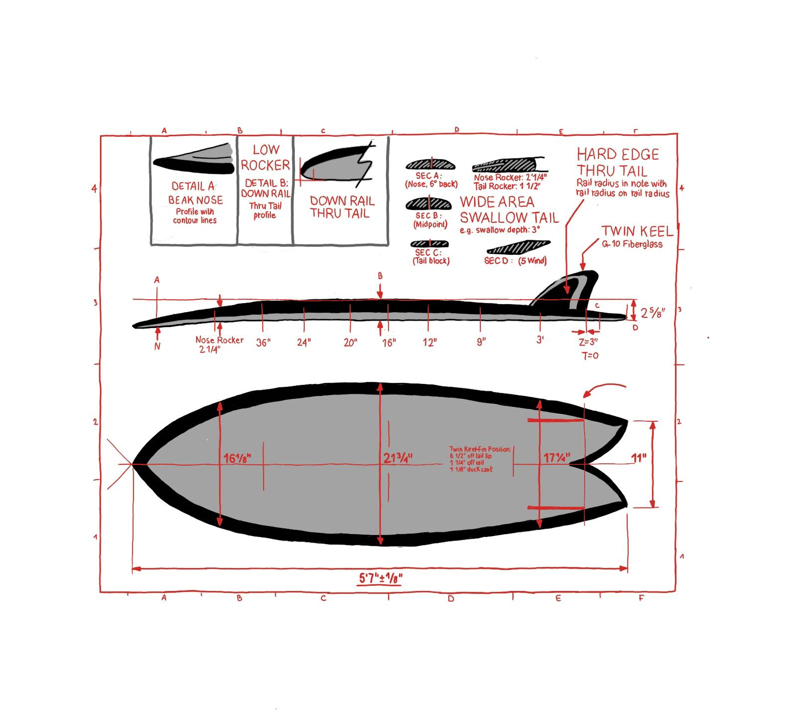

01
Conception
Le projet a débuté par une phase de recherche autour des formes, des volumes et des usages, en lien avec les conditions de pratique et les profils des utilisateurs. Cette étape a permis de définir une planche adaptée, en intégrant des contraintes de stabilité, de maniabilité et de fabrication.